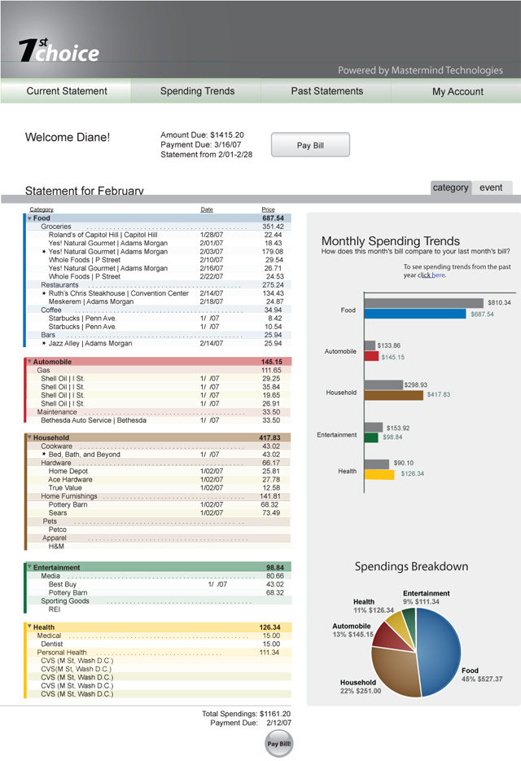
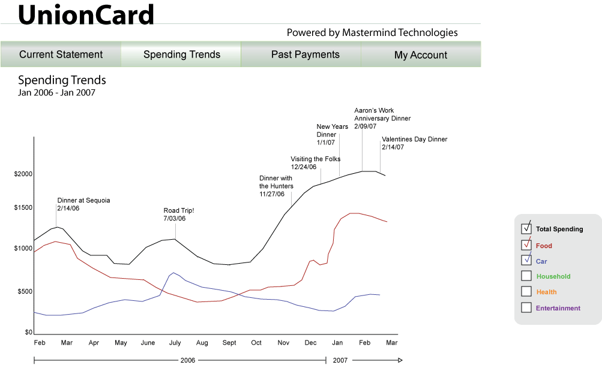
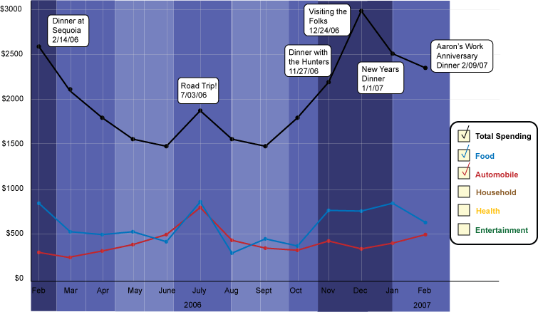

Summary
Summary| Research |
Synthesis |
Design |
Solution |
Sketches 01 |
Wireframes 02 |
Design |
03 Illustrator Mockup |
We did many iterations in Illustrator of the main statement page and the spending trends page.
This was one iteration of our main statement page, which allows users to see their complete bill grouped into meaningful categories. Alongside, the pie chart and bar graph gives users a breakdown of their expenditures and a comparison of this month's bill against last month's. Both of these provide information that users have a hard time remembering or extracting themselves.
Initially, we had two different views of the statement on this page - a category view (illustrated below), along with an event view which would show the user's purchases grouped by events. We considered showing this in a calendar format, but realized that users may want to manipulate the level of granularity. Instead, we moved this type of visualization to the Spending Trends Page, shown in the bottom two pictures.


